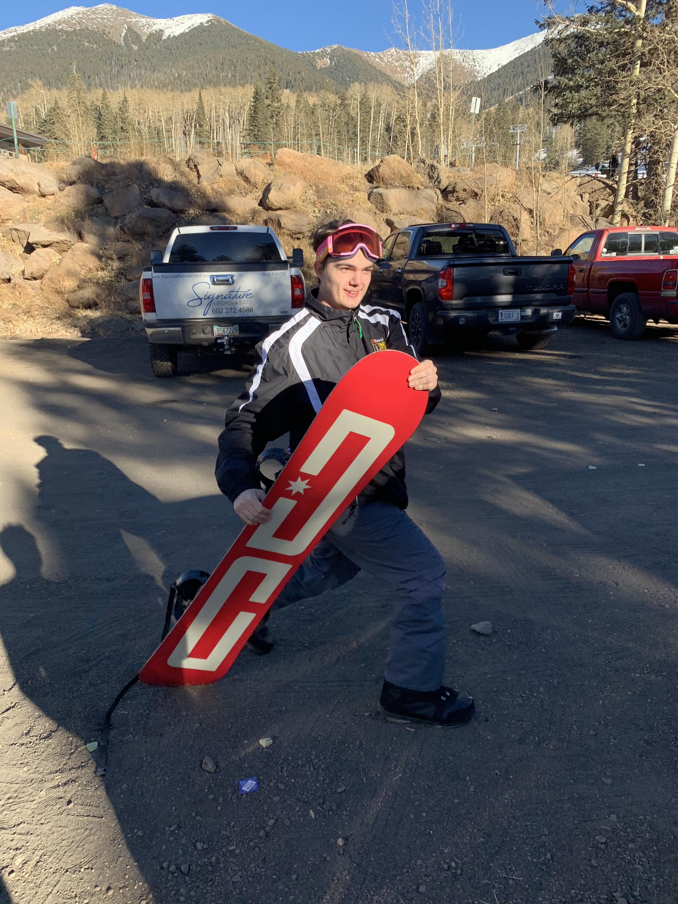

About Me

My name is Jordan Albers, I am currently 21 years old, and I was previously a student at Arizona State University studying finance, and now I am a student at the University of Arizona studying web development. Go devils though.
I hope to be a succesful developer because I love to problem solve, and a career based around that will always keep me interested. I also find code very interesting, and I hope to branch off and learn other languages after this course and after some time working in web development.
Outside of school and work I have many many hobbies. I like to call myself a hobby hopper, because I get really into something like juggling or competetive yo-yoing, and then I get bored and move on to the next thing.